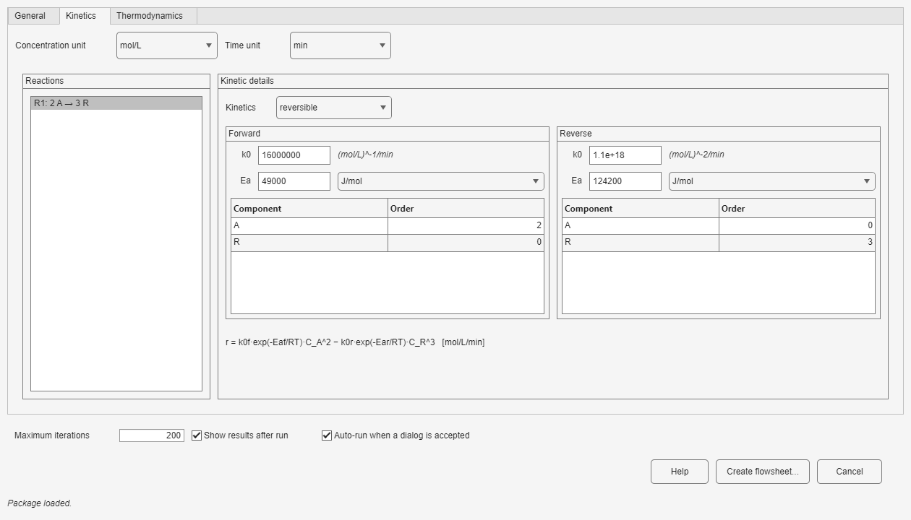
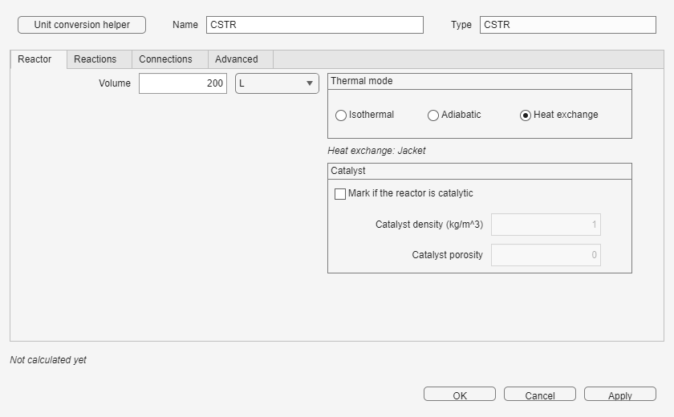
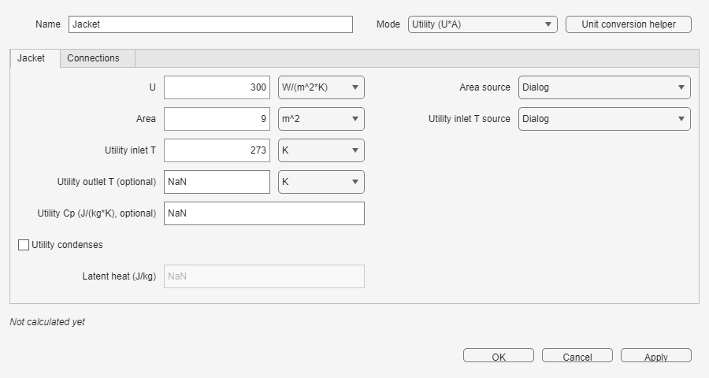
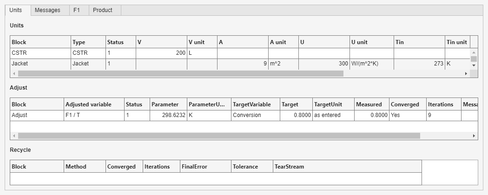
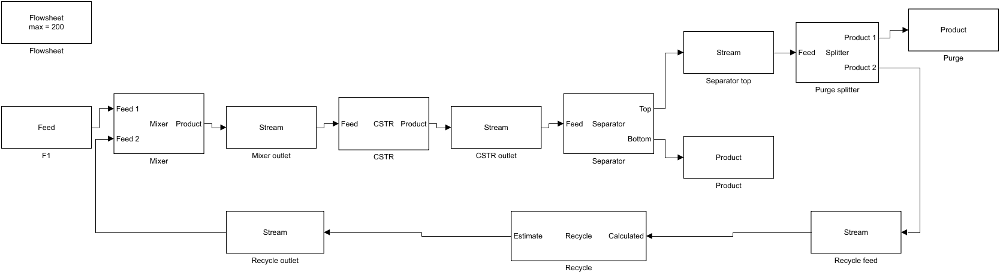

The NIRP library turns a Simulink diagram into a stationary chemical-process flowsheet. Material streams carry flow, composition, temperature, pressure, phase, and status; unit blocks solve the corresponding balances. The library contains Stream, CSTR, PFR, Heater/Cooler, Jacket, Mixer, Splitter, Separator, Recycle, and Adjust blocks.
.slx name; the matching data dictionary is created beside it.nirp.flowsheet.exampleNames; the selected model and dictionary are copied to a writable NIRP_examples folder.nirp.flowsheet.openLibrary and open NirpLibrary. Drag blocks into the model and use each block's custom dialog.From the command line, the equivalent entry points are nirp.flowsheet.openLibrary() and nirp.flowsheet.openExample('ex1_cstr_isothermal').
Set Number of components and Number of reactions. Enter component names and molecular weights, the stoichiometric coefficients for every reaction, and the named feeds used by Feed blocks. Component order is shared by every stream and reaction, so keep it consistent.
Select each reaction and choose powerlaw, reversible, or expression. For power-law kinetics, enter k0, Ea, and one order per component. Reversible kinetics adds reverse k0, Ea, and orders. Expression kinetics accepts a rate expression using component symbols and T in K. The concentration and time unit selectors determine the displayed k0 unit, and the live Rate equation updates as orders or units change.
The Ea check compares Ea,f − Ea,r with ΔH. Treat a warning as a sign or data-consistency check, not as a replacement for engineering judgment.

Enter constant or polynomial heat capacities, reaction enthalpies, and the reference temperature. Select Without thermodynamics only for a deliberately isothermal material-balance model. In that mode, adiabatic reactors, heat-exchange reactors, Heater, and Jacket stop with an error because their energy balances need Cp and ΔH.
Maximum iterations limits stationary iterations, including Recycle and Adjust convergence. Show results after run opens the results window after a run. Auto-run when a dialog is accepted reruns a complete model when a block dialog is accepted; incomplete diagrams are left for manual correction. In edit mode, Show results opens the latest results without rerunning.
Material-processing blocks should be separated by named Stream blocks. Scalar and Jacket signals connect directly to their dedicated ports. Values entered in dialogs may use the displayed units; block-to-block signals and the calculation core use SI.
Ports: a Feed has no material input and one output; Intermediate has one input and one output; Product has one input and no output. Auto is retained for older models, while current dialogs infer Feed, Intermediate, Product, or Unconnected from topology. A Feed can receive T and Q through optional scalar ports. Feed name, phase, composition, T, P, and Q come from the Reactive System. Product streams may select Reference feed and Key component to report conversion. The four result-unit fields affect presentation only.
Ports: Feed → Product, plus an optional volume input and a Jacket input in Heat exchange mode; an optional Heat (W) output reports duty. Specify reactor Volume (or drive it from Adjust), thermal mode, optional initial T estimate, catalyst density/porosity, and the active reactions. The material and energy balances determine the outlet, so do not specify a second independent outlet condition.
Ports: the same material, volume, Jacket, and heat ports as CSTR. Geometry may be defined by Volume or Length; one of V, L, D, and number of tubes can be calculated from the other three. For non-constant pressure select Pipe or Ergun and supply the requested density, viscosity, and (for Ergun) particle diameter. Catalyst data, initial T estimate, and reaction selection behave as in CSTR.
Isothermal uses the inlet temperature as the operating temperature; put a Heater before the reactor when a different temperature is required. Adiabatic sets heat exchange to zero. Heat exchange opens the Jacket signal port and requires a connected Jacket block. The Reactions tab enables a subset of the Reactive System reactions; all are used by default.

The Jacket has a signal output to a CSTR or PFR and three mutually exclusive modes. Utility (U*A) requires U, A, and utility inlet T; utility outlet T, Cp, condensing flag, and latent heat are optional as applicable. A and utility inlet T can instead arrive through scalar input ports. Specified reactor T fixes reactor temperature. Specified Q fixes heat duty, with Q > 0 heating the reactor. Selecting a mode fixes the corresponding thermal degree of freedom; do not add another Jacket specification for the same reactor.

Ports: Feed → Product, with an optional Heat (W) output. Select Outlet T or Duty; the energy balance calculates the other variable. Enter pressure drop as a loss. Positive duty heats the stream. Thermodynamic data are required.
Ports: two or more Feed inputs → one Product. Add inlet and Remove set the number of material inputs. The outlet follows the combined material and energy balance; there is no additional operating specification.
Ports: one Feed → two or more Products. Enter outlet split fractions; one missing fraction is calculated automatically so the fractions sum to one. The outlets retain the inlet state and composition.
Ports: one Feed → Top and Bottom. Specify each component's Recovery to Top; the bottom receives the remainder. This is a component splitter, not an equilibrium flash.
Ports: Calculated tear-stream input → Estimate output. Choose Direct or Wegstein, convergence tolerance, and initial estimate (Empty stream with T/P or a named Feed). Wegstein additionally uses QMin, QMax, and Acceleration every. The block supplies one iterative degree of freedom: the torn stream estimate.
Ports: a measured material stream enters and a scalar Parameter (SI) leaves. Connect that scalar to a supported parameter port such as reactor volume, feed T/Q, or Jacket area/T. Choose target variable (conversion, component molar flow, temperature, or component concentration), target value/unit, initial/min/max parameter values and unit, damping, tolerance, and strategy. The dialog's Connect action identifies the downstream parameter and limits units accordingly.
A material recycle creates an algebraic loop. Insert one Recycle block as the tear stream: its Estimate starts the iteration and its Calculated input closes the loop. Direct substitutes the calculated stream on every iteration. Wegstein accelerates that fixed-point update with q bounded by QMin ≤ QMax ≤ 0. Convergence requires the relative stream error to remain below Tolerance for consecutive iterations.
When Adjust and Recycle share a model, Simultaneous updates both during the same iteration. Nested waits for every Recycle to converge before taking the next Adjust step. The latter is intentionally used by ex50_recycle_with_adjust, where the recycle must settle for each trial CSTR volume.
If a recycle does not converge, inspect Recycle and Messages in Show results, increase Maximum iterations only after checking topology and specifications, try Wegstein with conservative bounds, and improve the initial estimate. ex48_recycle_pfr is a useful reference for a high-recirculation loop. A tighter tolerance is not a remedy for an unstable or wrongly connected flowsheet.
Use the model's Show results button or the same button in Reactive System edit mode. The Units tab reports unit volumes, heat duties, Jacket data, and other calculated unit values; it also contains the Adjust and Recycle convergence tables. Messages collects errors, warnings, and topology diagnostics. Each named Stream gets a table with component flow and concentration plus T, P, phase, status, and conversion when configured. PFR profiles appears when axial profiles are available.
After a run, block backgrounds are light green for solved, light yellow for warning, light red for error, and white when no result is available. Dialogs show values received through scalar ports beside fields whose source is Input port; these read-only values are converted to the dialog unit.

The following catalog is generated from the same names and descriptions returned by nirp.flowsheet.exampleNames.
| Model name | Description |
|---|---|
ex1_cstr_isothermal | Isothermal CSTR |
ex2_cstr_adiabatic_cooler | Adiabatic CSTR and cooler |
ex3_pfr_adiabatic | Adiabatic PFR |
ex4_problem40b_parallel | Parallel CSTRs (Problem 40b) |
ex5_recycle_cstr | CSTR with recycle |
ex6_adjust_volume | Adjusted CSTR volume |
ex7_problem44c | Adiabatic CSTR comparison (Problem 44c) |
ex8_problem37a_series | Problem 37a - Two CSTRs in series with two feeds |
ex9_problem40a_series | Problem 40a - Two CSTRs in series |
ex10_problem42_cstr_pfr | Problem 42 - CSTR then PFR |
ex11_problem42_pfr_cstr | Problem 42 - PFR then CSTR |
ex12_problem19_adiabatic_pfr | Problem 19 - Adiabatic gas PFR |
ex13_problem21a_isothermal_pfr | Problem 21a - Isothermal PFR, adjusted feed T |
ex14_problem21b_adiabatic_pfr | Problem 21b - Adiabatic PFR, adjusted feed T |
ex15_problem27_jacketed_cstr | Problem 27 - Jacketed CSTR, adjusted feed T |
ex16_problem30_adiabatic_cstr | Problem 30 - Mixer and adiabatic CSTR |
ex17_problem31_cooled_cstr | Problem 31 - Mixer and cooled CSTR |
ex18_problem44a_volumes | Problem 44a - Adjusted PFR and CSTR volumes |
ex19_problem45a_three_cstrs | Problem 45a - Three equal adjusted CSTRs |
ex20_problem45b_feed_temperature | Problem 45b - Adiabatic CSTR, adjusted feed T |
ex21_problem17_adiabatic_pfr_volume | Problem 17 - Adiabatic PFR, adjusted volume |
ex22_problem18_acetone_cracking | Problem 18 - Acetone cracking, adjusted PFR volume |
ex23_problem23_butane_isomerization | Problem 23 - Butane isomerization, adjusted PFR volume |
ex24_problem26_scale_up_cstr | Problem 26 - Gas CSTR scale-up, adjusted volume |
ex25_problem38_parallel_pfrs | Problem 38 - Two parallel PFRs with one adjusted volume |
ex26_problem40c_pfr_volume | Problem 40c - Isothermal PFR, adjusted volume |
ex27_problem49a_two_adiabatic_cstrs | Problem 49a - Two equal adiabatic CSTRs |
ex28_problem49b_one_adiabatic_cstr | Problem 49b - One adiabatic CSTR, adjusted volume |
ex29_problem34d_jacketed_cstr | Problem 34d - Jacketed Monsanto-reaction CSTR |
ex30_problem33b_cooled_gas_cstr | Problem 33b - Cooled reversible gas CSTR |
ex31_problem41_three_cstrs | Problem 41 - Three CSTRs, adjusted feed flow |
ex32_problem43_pfr_then_cstr | Problem 43 - PFR then CSTR, adjusted feed flow |
ex33_problem43_cstr_then_pfr | Problem 43 - CSTR then PFR, adjusted feed flow |
ex34_problem45c_cooled_tanks | Problem 45c - Cooled tanks, adjusted areas |
ex35_problem28_steam_jacket | Problem 28 - Steam-jacketed CSTR |
ex36_problem36_air_cooled_cstr | Problem 36 - Air-cooled CSTR, adjusted area |
ex37_problem20b_adiabatic_reversible_pfr | Problem 20b - Adiabatic reversible PFR, adjusted volume |
ex38_problem29_cstr_volume | Problem 29a - Isothermal CSTR, adjusted volume |
ex39_problem29_cooling_area | Problem 29b - Cooled CSTR, adjusted area |
ex40_problem32_three_steady_states | Problem 32a - Three CSTR steady states (middle branch unstable) |
ex41_problem48_cstr_then_adiabatic_pfr | Problem 48 - CSTR then adiabatic PFR, adjusted volumes |
ex42_problem33d_area_for_max_generation | Problem 33d - CSTR area at maximum heat generation |
ex43_problem15_number_of_tubes | Problem 15 - Isothermal gas PFR, number of tubes |
ex44_problem22_no_oxidation | Problem 22 - Adiabatic NO oxidation PFR volume |
ex45_problem16_pfr_space_time | Problem 16 - Isothermal PFR space time and product flow |
ex46_problem35_isothermal_cstr | Problem 35 - Isothermal NO-reduction CSTR |
ex47_problem35_adiabatic_feed_T | Problem 35 - Adiabatic CSTR with adjusted feed temperature |
ex48_recycle_pfr | PFR with recycle (R = 1, Levenspiel) |
ex49_reactor_separator_recycle | CSTR, separator and recycle with purge |
ex50_recycle_with_adjust | Separator recycle loop with adjusted CSTR volume |

ex49_reactor_separator_recycle demonstrates a CSTR, component separator, purge, and torn recycle loop.Developers validate the packaged catalog with simulink/run_validation.m, which simulates the reference cases and compares their reported quantities with the expected values. Users normally open the examples from the app and do not need to run that script.
| Message or symptom | What to check |
|---|---|
| Stream is unconnected. | Connect the Stream to at least one process unit. A feed has a consumer, a product has a producer, and an intermediate stream has both. |
| Blocks ... are directly connected; insert a Stream block. | Break every direct material connection between functional blocks with a named Stream block. Direct scalar and Jacket signal connections are valid. |
| Unknown or missing feed | The name of a Feed-role Stream must match a feed defined under Reactive System. Reopen Reactive System and add or rename the feed. |
| Maximum iterations reached or did not converge | Read the Recycle/Adjust rows and Messages, check specifications and tear placement, improve the initial guess, then consider Wegstein or Nested and a larger iteration limit. |
| Thermodynamics-required error | Adiabatic, Heat exchange, Heater, and Jacket calculations cannot run with Without thermodynamics. Supply Cp and ΔH or change the flowsheet to a physically valid isothermal configuration. |